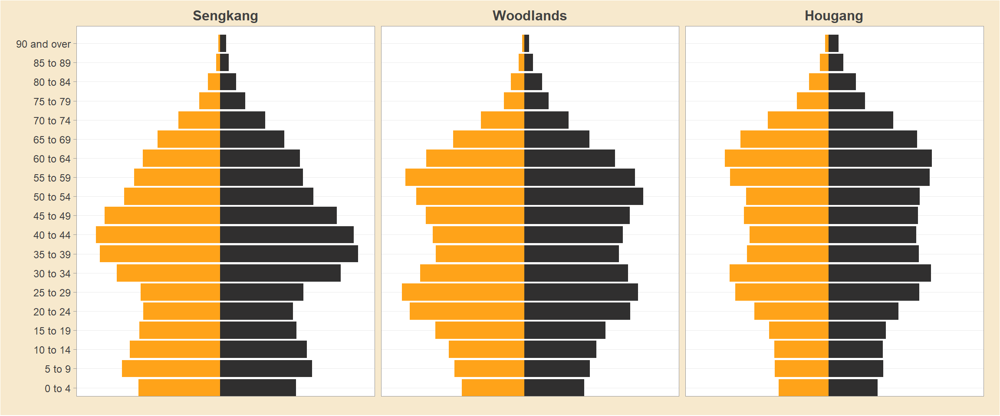

Show the code
pacman::p_load(tidyverse, readxl, knitr, plotly, skimr, questionr, funModeling, ggplot2, sf, tmap, quanteda, NLP)This study focus on make over a trellis plot of 9 population pyramids by
explores the Pyramid chart using ggplot2 and supporting R packages.
I am curious to see the different approaches you all take.The purpose of the makeover is to improve on the original visualisation. Focus on what works, what doesn’t work, why those things don’t work, and how you made it better. You should try stick to the fields in the data set provided and improve upon the original visualisation. However, if supplementing the data helps you tell a better story, go for it!
==========
In this take-home exercise, you are required to:
select one of the Take-home Exercise 1 prepared by your classmate,
critic the submission in terms of clarity and aesthetics,
prepare a sketch for the alternative design by using the data visualisation design principles and best practices you had learned in Lesson 1 and 2, and
remake the original design by using ggplot2, ggplot2 extensions and tidyverse packages.
The purpose of DataVis Makeover is to improve on the original visualisation. Focus on what works, what doesn’t work, why those things don’t work, and how you made it better. You should try stick to the fields in the data set provided and improve upon the original visualisation.
submission instructions
This is an individual assignment. You are required to work on the take-home exercises and prepare submission individually.
The specific submission instructions are as follows:
The analytical visualisation must be prepared by using R and appropriate R packages.
The write-up of the take-home exercise must be in Quarto html document format. You are required to publish the write-up on Netlify.
Provide the links to the Take-home Exercise write-up and github repository onto eLearn (i.e. Take-home Exercise section)
With consent given by fellow coursemate, Chen Yi Man, below is my draft to refine her works with R Studio and Tidyverse, sf and tmap packages.
The following are the packages required for this exercise :
Singstat Dataset for Population
Master Plan 2014 Planning Area Boundary. Web version instead of Sea version.
Data
| Source(s) | Urban Redevelopment Authority |
|---|---|
| Licence | Singapore Open Data Licence |
https://data.gov.sg/dataset/master-plan-2014-planning-area-boundary-web
There are special character such as “_” among Age Groups’ value.
Unable to use str_sub( ) function from stringr package as the position of “_” is varied among values.
pop_attribute$ag <- gsub("_",
" ",
pop_attribute$ag,
fixed = TRUE)3.3.3
questionr::freq(pop_attribute$pa[(pop_attribute$pop >= 0)]) n % val%
Ang Mo Kio 3648 3.6 3.6
Bedok 2432 2.4 2.4
Bishan 912 0.9 0.9
Boon Lay 1216 1.2 1.2
Bukit Batok 2736 2.7 2.7
Bukit Merah 5168 5.1 5.1
Bukit Panjang 2128 2.1 2.1
Bukit Timah 2432 2.4 2.4
Central Water Catchment 304 0.3 0.3
Changi 912 0.9 0.9
Changi Bay 304 0.3 0.3
Choa Chu Kang 1824 1.8 1.8
Clementi 2736 2.7 2.7
Downtown Core 3952 3.9 3.9
Geylang 1520 1.5 1.5
Hougang 3040 3.0 3.0
Jurong East 3344 3.3 3.3
Jurong West 2736 2.7 2.7
Kallang 2736 2.7 2.7
Lim Chu Kang 304 0.3 0.3
Mandai 912 0.9 0.9
Marina East 304 0.3 0.3
Marina South 304 0.3 0.3
Marine Parade 1520 1.5 1.5
Museum 912 0.9 0.9
Newton 1824 1.8 1.8
North-Eastern Islands 304 0.3 0.3
Novena 1520 1.5 1.5
Orchard 912 0.9 0.9
Outram 1216 1.2 1.2
Pasir Ris 2432 2.4 2.4
Paya Lebar 1520 1.5 1.5
Pioneer 1520 1.5 1.5
Punggol 2128 2.1 2.1
Queenstown 4560 4.5 4.5
River Valley 1520 1.5 1.5
Rochor 3040 3.0 3.0
Seletar 1216 1.2 1.2
Sembawang 2736 2.7 2.7
Sengkang 2128 2.1 2.1
Serangoon 2128 2.1 2.1
Simpang 1216 1.2 1.2
Singapore River 912 0.9 0.9
Southern Islands 608 0.6 0.6
Straits View 304 0.3 0.3
Sungei Kadut 1520 1.5 1.5
Tampines 1520 1.5 1.5
Tanglin 1216 1.2 1.2
Tengah 1824 1.8 1.8
Toa Payoh 3648 3.6 3.6
Tuas 1824 1.8 1.8
Western Islands 912 0.9 0.9
Western Water Catchment 912 0.9 0.9
Woodlands 2736 2.7 2.7
Yishun 2736 2.7 2.7test0 <- pop_attribute %>%
filter(pa == "Bedok") %>%
group_by(ag, sex) %>%
summarise(`count_pop` = sum(`pop`)) %>%
ungroup()`summarise()` has grouped output by 'ag'. You can override using the `.groups`
argument.ggplot(data = test0,
aes(y = ag)) +
geom_bar() +
theme_bw() +
ggtitle("Test Age Group Distribution") 
unique(pop_attribute$ag) [1] "0 to 4" "5 to 9" "10 to 14" "15 to 19" "20 to 24"
[6] "25 to 29" "30 to 34" "35 to 39" "40 to 44" "45 to 49"
[11] "50 to 54" "55 to 59" "60 to 64" "65 to 69" "70 to 74"
[16] "75 to 79" "80 to 84" "85 to 89" "90 and over"Remarks :
Notice the age group “5 to 9” is placed after “45 to 49” instead of placed at 2nd value as shown under the “Inspect Data” tab.
test3 <- pop_attribute %>%
group_by(pa, ag) %>%
summarise(`count_pop` = sum(`pop`)) %>%
ungroup() %>%
pivot_wider(names_from = ag,
values_from = count_pop) %>%
mutate(YOUNG = rowSums(.[3:6]) +
rowSums(.[12])) %>%
mutate(`ECONOMY ACTIVE` = rowSums(.[7:11]) +
rowSums(.[13:15])) %>%
mutate(`AGED`=rowSums(.[16:21])) %>%
mutate(`TOTAL`=rowSums(.[3:21])) %>%
mutate(`DEPENDENCY` = (`YOUNG` + `AGED`)/`ECONOMY ACTIVE`) %>%
select(`PA`, `SZ`, `YOUNG`, `ECONOMY ACTIVE`, `AGED`, `TOTAL`, `DEPENDENCY`)popPyr_sgp <- ggplot(pop_sgp,
aes(x = ifelse(sex == "Males",
yes = -count_pop,
no = count_pop),
y = ag,
fill = sex)) +
geom_col() +
scale_x_continuous(breaks = seq(-200000, 200000, 50000),
labels = paste0(
as.character(
c(seq(200, 0, -50),
seq(50, 200, 50))),
"k")) +
labs (x = "Count of Population",
y = "Age\nGroup",
fill = "Gender",
title = "Singapore Population Pyramid 2022",
subtitle = "Distribution of gender and age groups") +
theme_bw() +
theme(plot.title = element_text(size = 14,
colour = "#302f2f",
face = "bold"),
plot.subtitle = element_text(size = 8,
colour = "#424242",
face = "italic"),
axis.ticks = element_line(colour = "#969595",
size = 0.3),
axis.title.y = element_text(angle = 0,
size = 8,
colour = "#302f2f"),
axis.title.x = element_text(size = 8,
colour = "#302f2f"),
axis.text.x = element_text(size = 7,
colour = "#424242"),
axis.text.y = element_text(size = 7,
colour = "#424242"),
legend.position = "bottom",
legend.text = element_text(size = 7,
colour = "#424242"),
legend.title = element_text(size = 8,
colour = "#302f2f"),
panel.grid.major = element_line(size = rel(0.5)),
panel.grid.minor = element_blank(),
plot.background = element_rect(fill = "#fcfbf5"),
panel.border = element_rect(colour = "#969595",
size = 0.3)) +
geom_text(aes(label = pct),
hjust = ifelse(pop_sgp$sex == "Males",
yes = 1.1,
no = -0.1),
size = 1.6,
check_overlap = FALSE,
colour = "#5e5c5c") +
scale_fill_manual(values = c("Males" = "lightblue",
"Females" = "lightpink"))Warning: The `size` argument of `element_line()` is deprecated as of ggplot2 3.4.0.
ℹ Please use the `linewidth` argument instead.Warning: The `size` argument of `element_rect()` is deprecated as of ggplot2 3.4.0.
ℹ Please use the `linewidth` argument instead.popPyr_sgp
labs(x = "Race",
y = "No. of\nPupils",
title = "Primary 3 Students By Race",
subtitle = "Students from a local school") +
theme(axis.title.y = element_text(angle = 0,
size = 10),
axis.title.x = element_text(size = 10),
axis.text.x = element_text(size = 10),
axis.text.y = element_text(size = 10)) +
geom_text(aes(label = res),
vjust = -0.9) +
scale_y_continuous(limits = c(0,210))NULLggplotly(popPyr_sgp,
session = "knitr")4.1.3 Plot A Single Population Pyramid (Static)
popPyr_t9 <- ggplot() +
geom_bar(data = subset(t9_filtered,
sex == "Males"),
aes(x = ag,
y = -count_pop,
fill = pa),
stat = "identity",
fill = "orange") +
geom_bar(data = subset(t9_filtered,
sex == "Females"),
aes(x = ag,
y = count_pop,
fill = pa),
stat = "identity",
fill = "steelblue") +
scale_y_continuous(breaks = seq(-150000, 150000, 50000),
labels = paste0(
as.character(
c(seq(150, 0, -50),
seq(50, 150, 50))),
"k")) +
coord_flip() +
facet_wrap(~pa, drop = FALSE, ncol = 3) +
labs (x = "Population",
y = "Age",
title = 'Singapore Age-Sex Population Pyramid 2022') +
theme_bw() +
theme(axis.ticks.y = element_blank()) +
scale_fill_manual(values = c("Males" = "lightblue",
"Females" = "lightpink"))
popPyr_t9
ggplotly(popPyr_t9,
session = "knitr")Singstat. (2022). Population Dashboard. https://www.singstat.gov.sg/find-data/search-by-theme/population/population-and-population-structure/visualising-data/population-dashboard↩︎
Singstat. (2002). Indicators On Population. https://tablebuilder.singstat.gov.sg/table/TS/M810001↩︎
Ministry of Manpower. (2020). Report: Singapore’s Adjusted Gender Pay Gap. https://stats.mom.gov.sg/Pages/Singapores-Adjusted-Gender-Pay-Gap.aspx↩︎